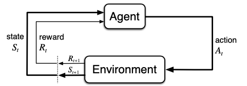

Markov Decision Processes & Q-Learning, the primer
A Markov Decision Process is a deceptively simple model: an agent observes a state, takes an action, receives a reward, and lands in a new state. The subscript t on each arrow marks a step in time, much like taking a turn in a board game.

Q-Learning
Q-Learning is a model-free reinforcement-learning algorithm: it learns the expected long-run value of each (state, action) pair without ever building a model of the environment. It works by repeatedly applying the Bellman update:
$Q(s, a) \leftarrow Q(s, a) + \alpha\,\big[\,r + \gamma \max_{a'} Q(s', a') - Q(s, a)\,\big]$
where $\alpha$ is the learning rate, $\gamma$ the discount factor, $r$ the reward, and $s'$ the next state. Background reading:
Agent SARSA TD learning Bellman equation
The crawling robot, concretely

- States: the discretized arm and hand angles, 36 arm buckets × 52 hand buckets = 1,872 states.
- Actions: move the arm or hand up or down, 4 discrete choices.
- Rewards: the change in the body's x-position. Forward motion is positive; standing still or sliding back is zero or negative.
Continually updating Q-values lets the agent converge, in principle, to the optimal policy for any finite MDP. The question this project asks is: how close does it actually get, and how fast?